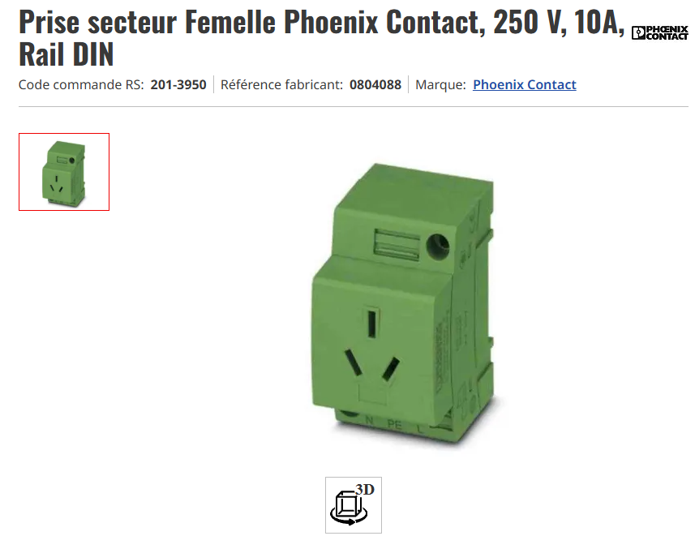
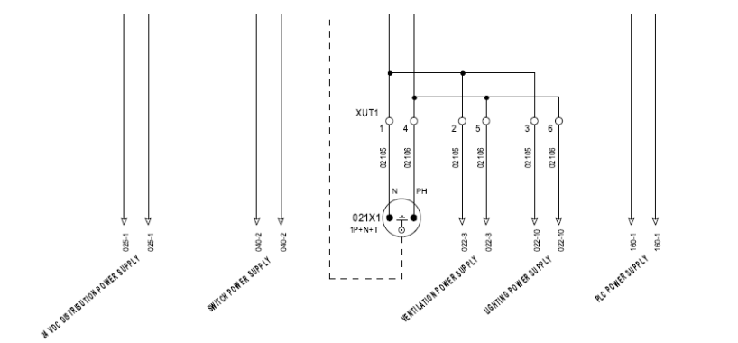
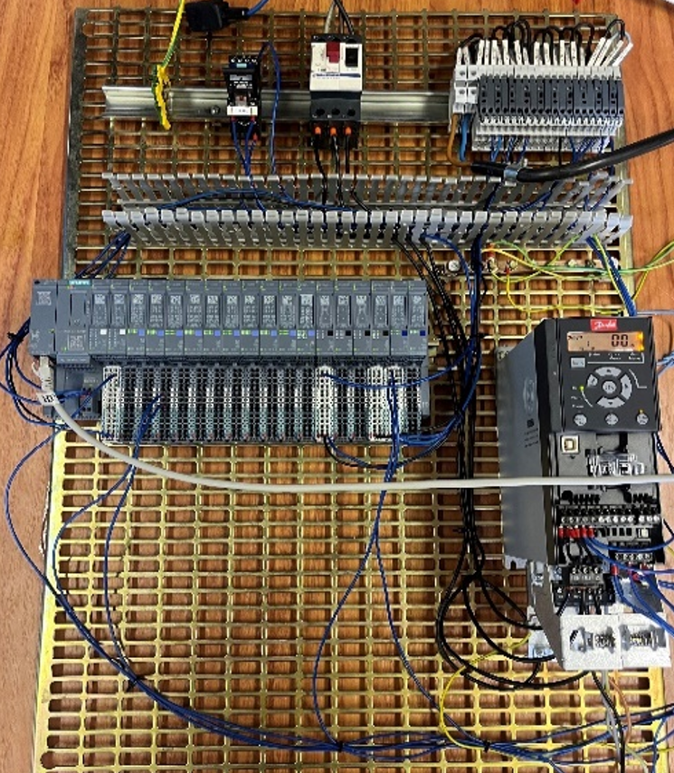
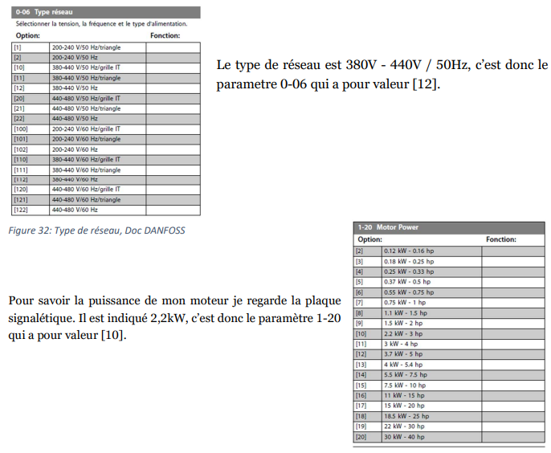

Concevoir la partie GEII d’un système
La compétence Concevoir la partie GEII d’un système :
- 1. Prouver la pertinence de ses choix technologique
J'ai su montrer ma capacité à prouver la pertinence de mes choix technologiques lors de la révision de l’armoire d’alimentation prévue au site de Tianjin en Chine, sur la base de l’étude électrique que j’ai présentée dans le chapitre « Finalisation de l’étude électrique » de mon rapport. Conscient des variations d’un pays à l’autre dans l’exigence des normes électriques, j’ai donc procédé à vérification des normes locales et à la refonte de la référence de la prise interne pour répondre aux dispositions chinoises, ce qui a nécessité une recherche approfondie des caractéristiques des prises en exploitation en Chine, la prise en compte des contraintes de sécurité en vigueur dans le réseau local.
J’ai ensuite mis à jour le schéma See Electrical en remplaçant la référence européenne par la référence conforme aux normes CN tout en préservant l’intégrité fonctionnelle de l’armoire (alimentation, protections et câblages). Cette option relevait d’un choix technique pertinent, garantissant la compatibilité des matériels, évitant les risques de non-conformité et anticipant les besoins spécifiques du client à l’international. En justifiant chacune des modifications (références prises, types de sectionneurs adaptés, positionnements des borniers) une preuve tangible de la pertinence de ma démarche a été apportée en adaptant une solution standardisée à un contexte local, tout en gardant ainsi la cohérence globale du projet et en respectant les délais exigés par le client.
- 2. Rédiger un dossier de conception
Au cours de la période de stage que j’ai eu le plaisir d’effectuer, l’une des compétences clés développées a été la capacité de rédiger un dossier de conception technique de manière rigoureuse, ordonnée. C’est cette compétence que j’ai mise à l’œuvre durant la phase de programmation du variateur (VAR) car l’une des conditions de la bonne configuration du système était de s’appuyer sur les consignes et la documentation technique fournies sur le site internet de DANFOSS en vue d’appréhender les paramètres de fonctionnement et leurs bonnes pratiques (voir partie C – Programmation du VAR).
Dans le cadre des contraintes évoquées ci-avant, j’ai effectué plusieurs choix et modifications pour le paramétrage du VAR. L’ensemble de ces évolutions a été étudié et retranscrit dans un rapport de conception complété à l’issue de ce travail. Ce rapport décrit les principaux changements apportés au réglage du variateur et justifie chacun d’eux par les besoins fonctionnels qui ont été fixés et les préconisations techniques données par DANFOSS. Dans la partie C de mon rapport de stage, tous ces éléments sont décrits dans le détail, permettant de suivre clairement le cheminement de réflexion et les choix techniques réalises.
